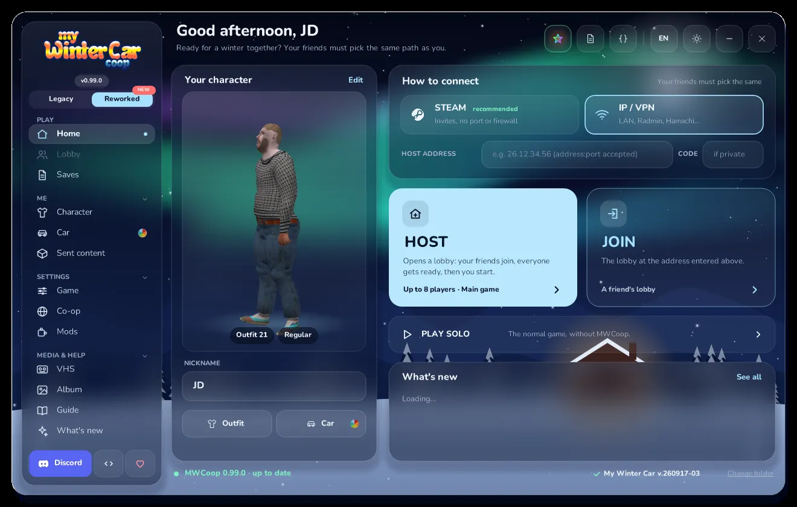
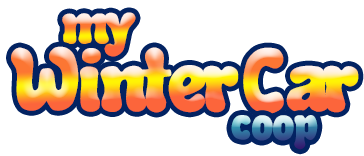
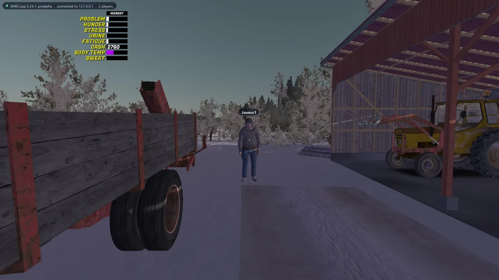
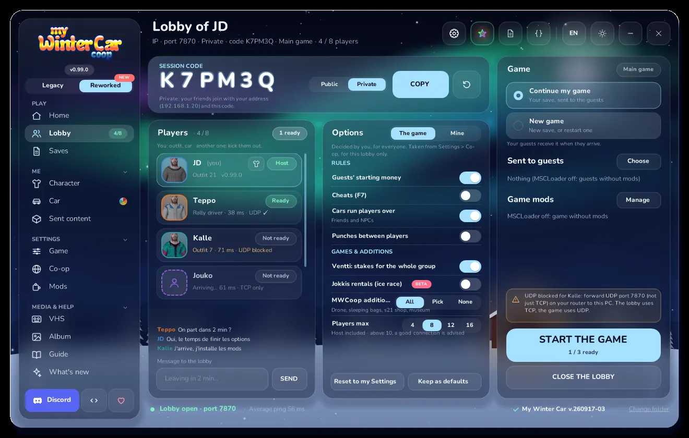
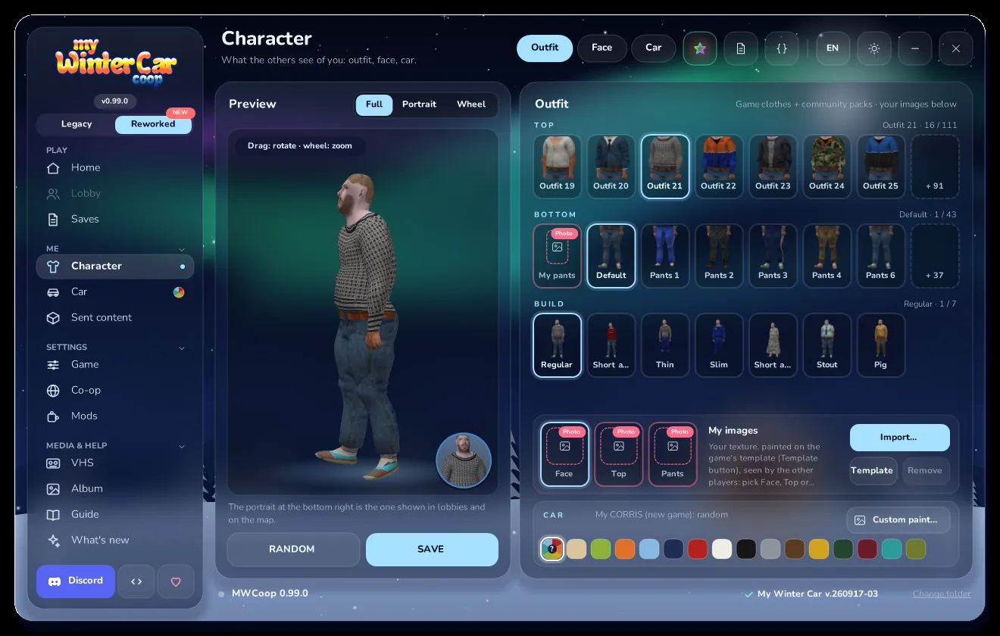
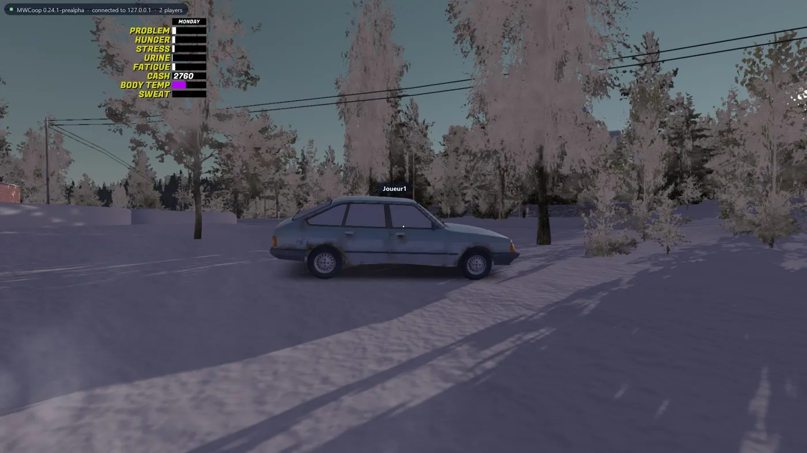
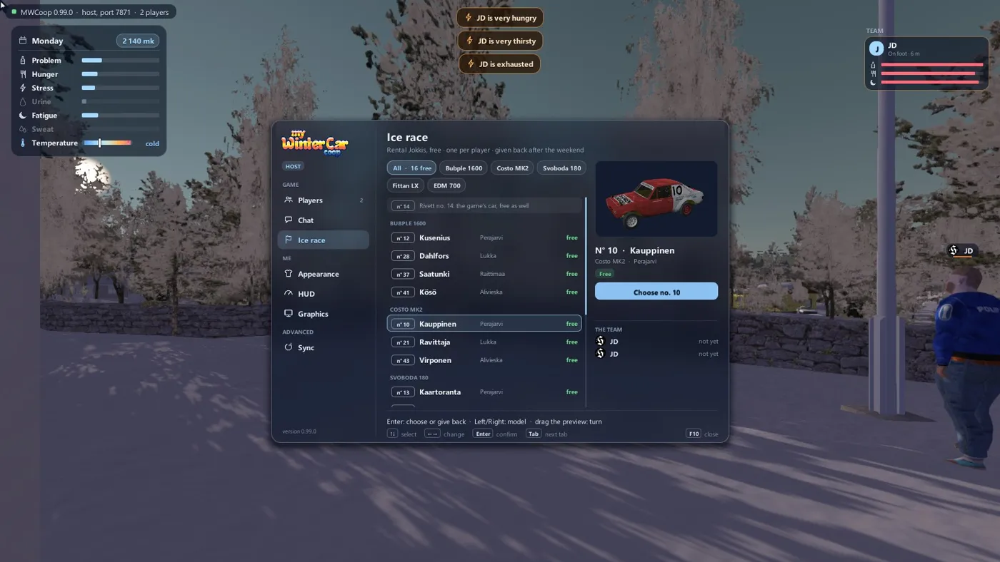

Beta
- Time, weather, traffic and NPCs shared with the host
- Jobs, shops, Teimo, Fleetari and the post office
- Doors, switches, phone and fuel pumps in sync
Co-op for My Summer Car and My Winter Car. One host, one world, all your friends in it.
Needs your own copy of the game on Steam. No game files are included.

The same launcher handles both games. Pick the game, host or join, and drive together.

Stable
Friends join the host's save: same NPCs, jobs, shops and bills, with a wallet each.
Public or private lobby with a session code, chat and the game's options.
Invite friends through Steam, or use IP, LAN, Radmin or Hamachi.
Outfit, face and build in 3D, plus a colour for your car.
The launcher installs the mod, checks your game and offers each new version.
MSCLoader runs next to the mod. The Mods page installs it for you.
English, French, Russian and Arabic in the launcher.




Get the latest release from GitHub and unzip it anywhere.
Start MWCoop.exe. It finds your game and installs the mod.
Host a lobby and invite your friends, or join theirs. Everyone picks the same game.
Found a bug or need help? Open an issue on GitHub. And if you like the mod, a coffee on Ko-fi keeps it going.